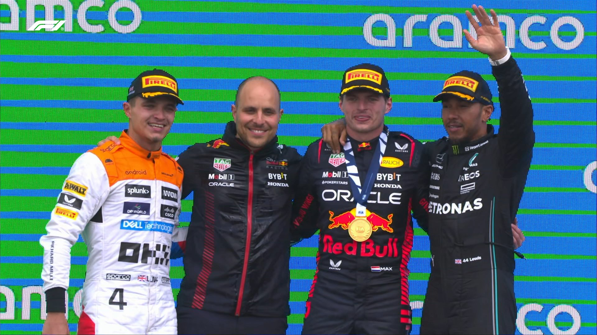
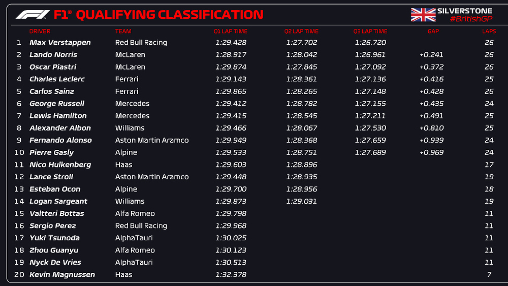
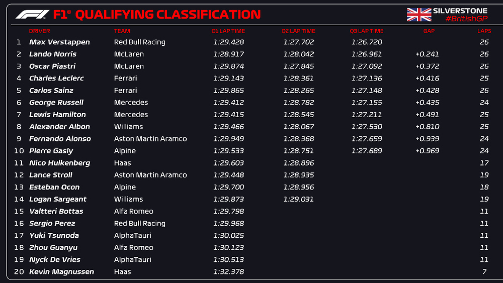

Race



Your 2023 British Grand Prix podium!

Max Verstappen has won his maiden British Grand Prix on his 150th start of Red Bull.

A lovely moment as George Russell congratulates Lando Norris on his P2 here.

Lando holds off Lewis! The battle for second begins immediately as the race resumes 😱

Hamilton's pit stop under the Safety Car sees him jump Piastri!

Magnussen grinds to a halt, and the Safety Car comes out!

Leclerc is the first of the front-runners to pit from P4, returning to the track P12 with a set of hard tyres

Verstappen zips past Norris to re-take the lead at Brooklands

LIGHTS OUT! LANDO NORRIS LEADS!!!!!
 
